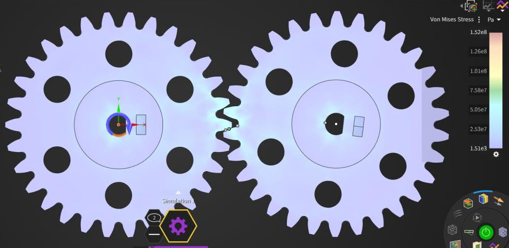
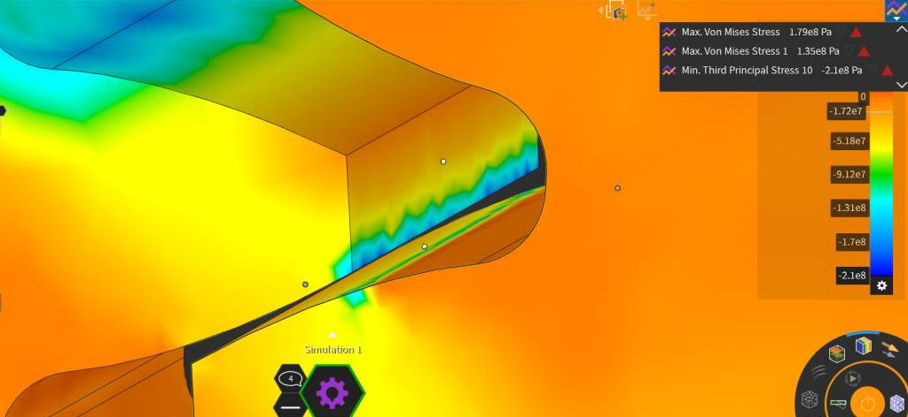
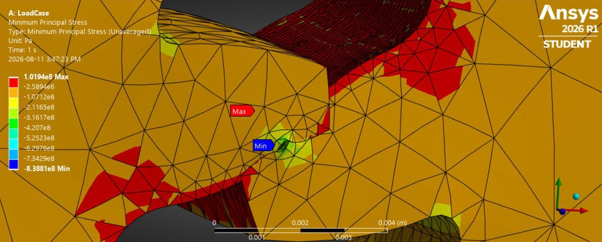

Case Study · Structural FEA
Involute Spur Gear Root & Contact Stresses
How closely does the AGMA standard agree with FEA on a pair of meshing spur gears? On root stress, very closely. On contact stress, not at all — until the model was rebuilt properly.



The model
Two identical involute spur gears: 10 mm face width, 30 teeth, 2 mm transverse module, 20° pressure angle, structural steel. One bore takes a fixed support to stand in for the load, the other a hinged support as the transmitting gear, with a 32 N·m moment applied clockwise — 1 kN acting at the 32 mm from tooth to centre. The setup deliberately assumes the worst case for a spur gear: the moment when only a single pair of teeth is carrying the load.
Two failure modes are checked against AGMA's ANSI/AGMA 2001-D04 methodology, which models a tooth as a cantilevered beam and layers on empirical factors for overload, dynamics, size, load distribution and rim thickness:
- Root failure — the tooth bending at its base. AGMA gives 139.34 MPa.
- Pitting — contact stress cratering the tooth surface under cyclic load. AGMA gives 883.3 MPa.
Discovery: one answer right, one badly wrong
Running in Discovery's Refine mode, the load visibly concentrates in exactly the two places the theory says it should — the root of the driving tooth and the contact surface of the tooth it pushes against. Root stress came out at 135 MPa, a 3.11% error against AGMA. That part worked.
Pitting stress came out at 210 MPa against a predicted 883 MPa — 76.2% error. Sweeping local mesh fidelity from 0.0006 m down to 0.0003 m didn't rescue it; the value wandered without ever settling:
- 0.00060 m → root 131 MPa, pitting 158 MPa
- 0.00050 m → root 133 MPa, pitting 173 MPa
- 0.00040 m → root 133 MPa, pitting 186 MPa
- 0.00030 m → root 135 MPa, pitting 210 MPa
Cross-checking the AGMA contact equation against a Hertzian line-contact calculation showed the two agreeing — so the analytical side wasn't the problem. The absence of convergence was itself the finding: a contact solution that refuses to settle under mesh refinement is under-defined, not merely under-resolved.
Rebuilding it in Mechanical
Discovery 2026 R1 doesn't expose enough control over contact behaviour to fix that, so the model moved to Ansys Mechanical. Supports, moment and frictionless contact carried over unchanged; what changed was the contact definition, rebuilt following S.D. Patel's thesis on FEA of involute gear stresses so that a single-tooth approach would hold up across the full gear. Local fidelity was set to 2.73e-4 m on the same three faces.
Minimum principal stress at the contact patch came out at 838 MPa — 5.13% error, down from 76.2%. Root stress drifted slightly to 6.93%, still comfortably acceptable. Trading a little accuracy on the mode that was already right to fix the one that was broken was the correct call.
Things that were tried and rejected
- Distributed force instead of a moment. Stress propagated through both gears rather than concentrating on the fixed one — physically wrong for this load case.
- Varying gear centre distance. Stresses did rise with separation, exactly as a longer moment arm predicts, but only at spacings where real gears would skip teeth. Correct trend, useless model.
Why the two methods disagree at all
AGMA's contact stress equation rests on Hertzian line contact — two cylinders meeting along a line a few microns wide, carrying uniform load across the full face width. FEA imposes none of that and resolves the actual three-dimensional contact instead. AGMA is the better tool for a standardised, conservative rating; FEA is the better tool for geometry the standard was never written for — non-involute profiles, partially supported teeth, anisotropic materials. The useful conclusion is knowing which question each one answers.